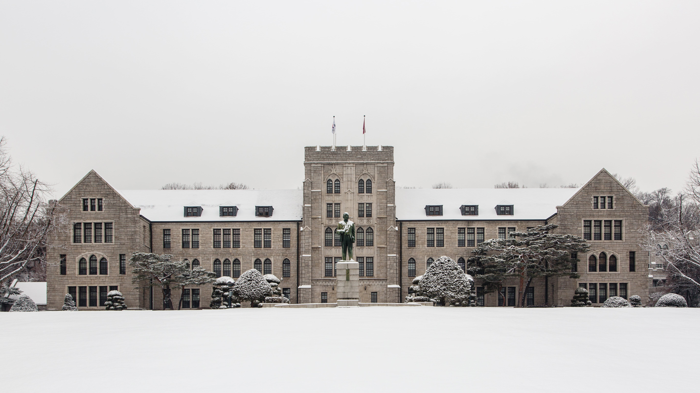
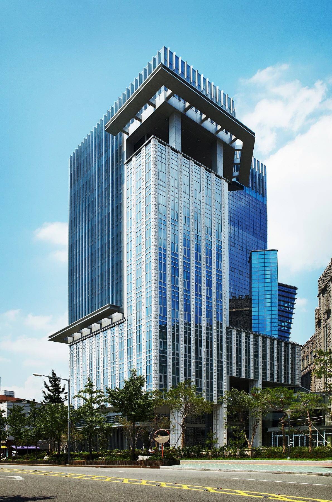
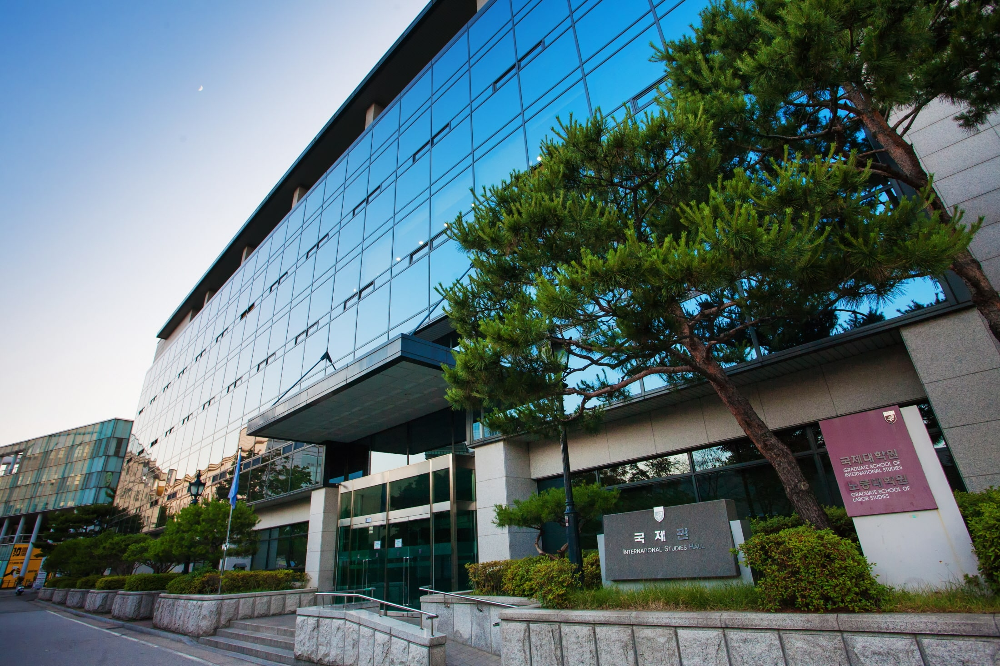
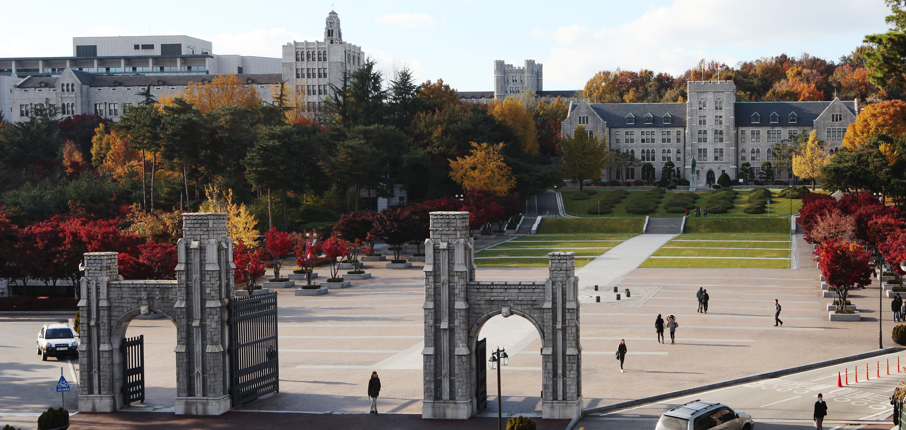
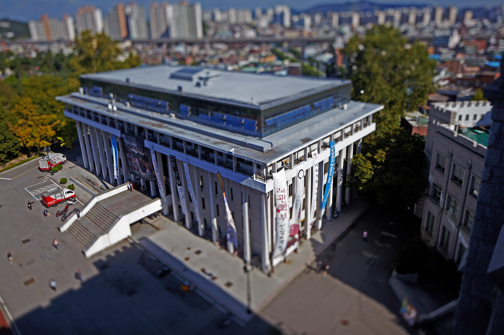
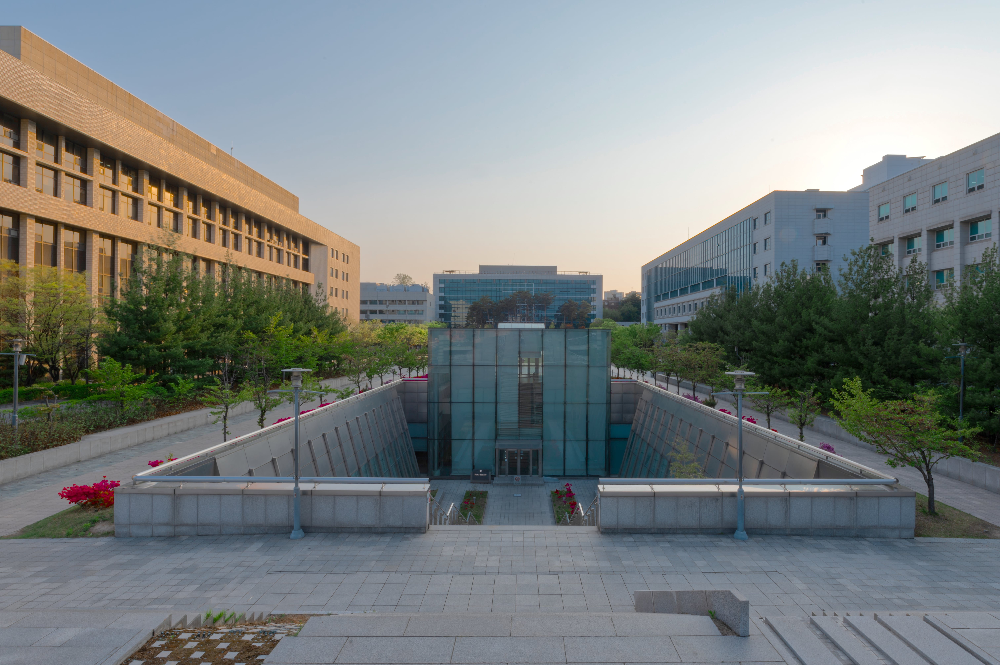
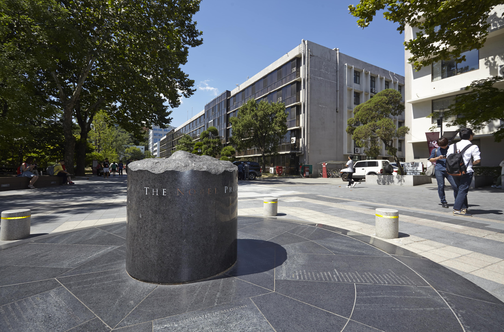
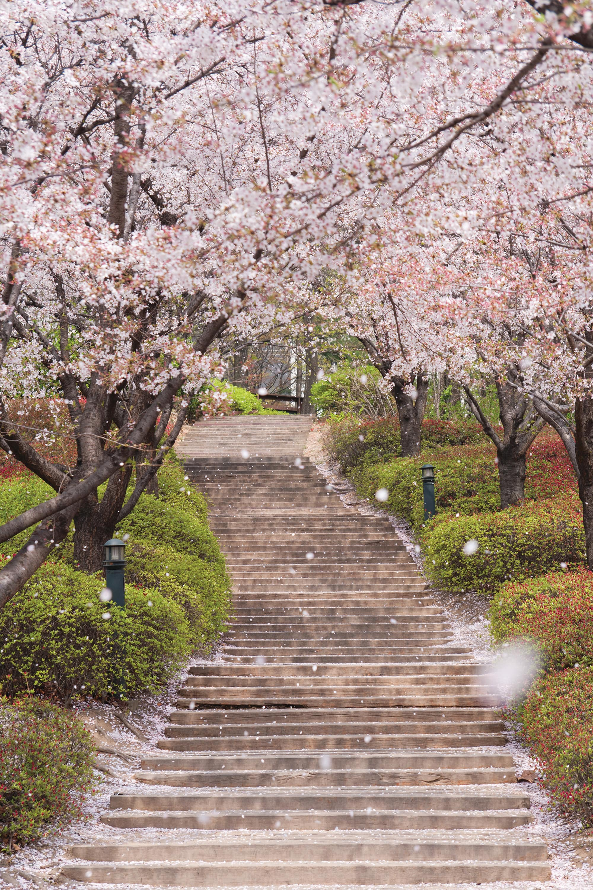
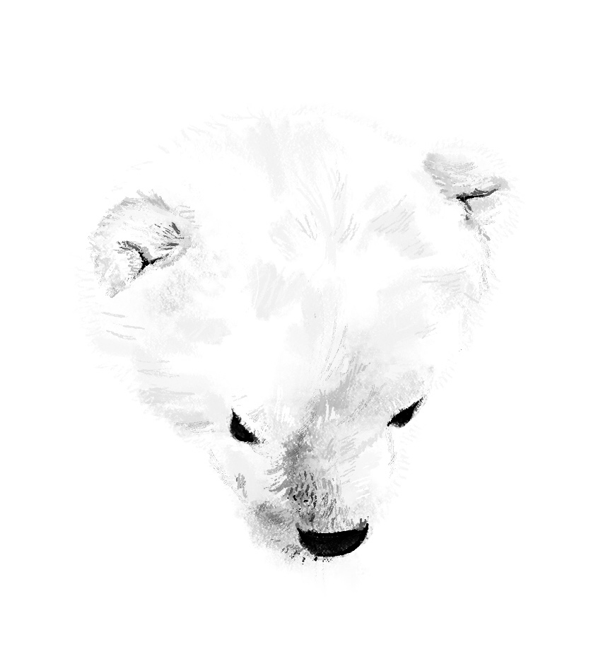

본관
- 총장실 등의 대학본부로 이용된다.
- 건물 뒤편에는 서관에서 중앙도서관으로 가는 최단루트인 '다람쥐길'이 있다.
- 김성수 동상이 본관 앞에 서 있다.

백주년기념삼성관
- 주로 '백기'라 부른다.
- 엘포관과 중앙광장 사이에 위치해 있다.
- 고려대 박물관, 학술정보관이 있으며 4층에는 대열람실이 있다.

미디어관
- 유리로 된 건물로 고대 내에서 가장 높은 건물이다.
- 교양관과 연결되어 있으며, 정문은 큰길과 맞닿아있다.
- KU시네마트랩은 2018년을 마지막으로 정기 상영이 중단되었다.

문과대학(서관)
- 건물 꼭대기에는 문과대학을 상징하는 시계탑이 있다.
- 애기능 캠퍼스 생명과학대 서관과 혼동하지 말자.
- 서관 앞에는 의암 손병희 선생 흉상이, 뒤에는 조지훈 전 국문학과 교수의 시비가 있다.

국제관
- 정경대 후문의 '폭풍의 언덕'을 넘어오면 국제관이 보인다.
- 2개의 입구가 있으며 2층에는 고대빵 3호점이 있다.
- Academic English가 진행되는 곳이다.

중앙광장
- 인문사회계의 지하스퀘어, '중지' 또는 '중광'으로 불린다.
- 열람실, 유니스토어, 카페, 학사지원본부, 원스탑, 건강센터 등이 위치해있다
- SK미래관-백기-LP관이 연결되어있다.
- 중광 잔디 위에서 동기들과 짜장면을 배달시켜 먹어보자.

학생회관
- 1층과 2층에 학생식당이 있다
- 총학생회실, 동아리연합회실, 동아리방 등이 있다
- 교양관과 4.18 기념관 사이에 위치해있다

과학도서관
- 자연계 캠퍼스 중심에 위치해 있으며, '과도'라 불린다.
- 하나스퀘어와 연결되어 있다.
- 라운지, 열람실, 휴게실, 캐럴 등이 있다.

하나스퀘어
- 이공계 캠퍼스의 지하광장이며 '하스'라 불린다.
- 카페, 고대빵, 맘스터치, 유니스토어, 헬스장, 하나은행, 원스탑, 열람실 등이 있다.
- 사진은 하스 중앙에 있는 그랜드피아노이다. 누구나 연주할 수 있다.

공학관
- 2층에는 '해동'으로 부르는 '해동학술정보실'이 있다.
- 공학관 3층과 산학관 2층은 구름다리로 연결되어 있다.
- (4층에는 전전 과사가 있다.)

노벨광장
- 자연계 캠퍼스에 있는 작은 광장으로 참살이길로 나가는 길이다. '노벨'로 불린다.
- 고대인 최초 노벨상 수상자 흉상을 세우기 위한 석조물이 있다.
- 약속 핫스팟이다.

애기능
- 자연계 캠퍼스에 위치한 작은 동산이다.
- 벚꽃이 진 후에 핀 철쭉이 썩 예쁘다...(벚꽃도...)
- 동산을 오르면 과학도서관으로 갈 수 있다. 흡연부스가 이 곳에 있다.

{kind=link}


{kind=link}
{kind=link}
{kind=link}
{kind=link}
{kind=link}
{kind=link}
{kind=link}